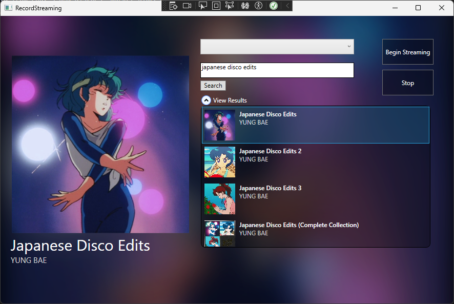
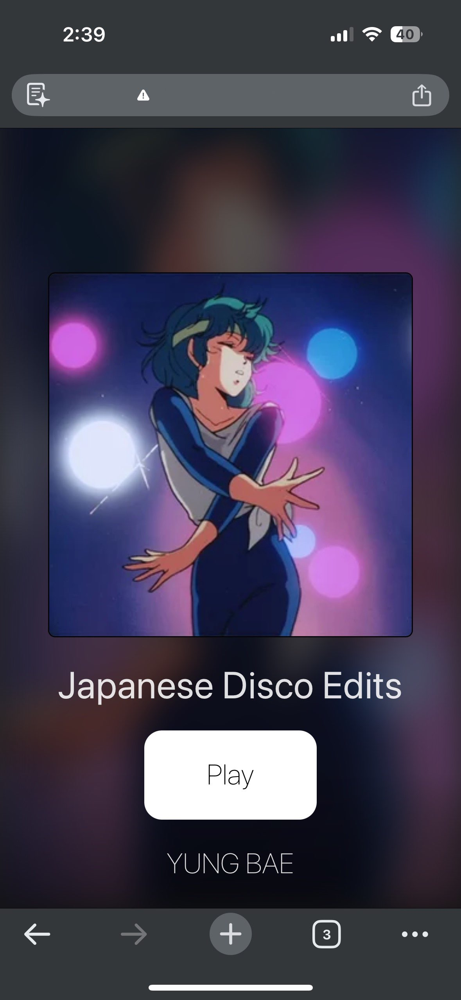
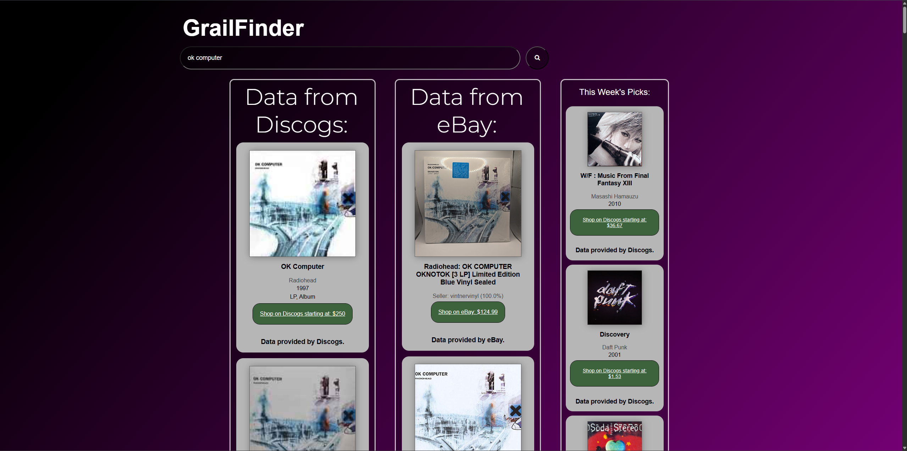
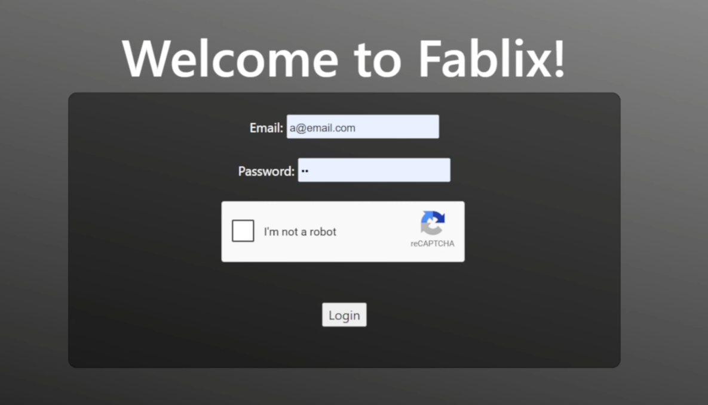
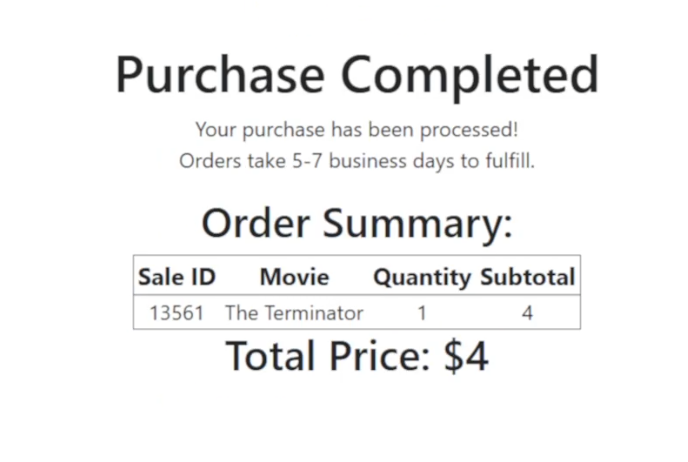

RecordStreaming is a native Windows 11 C# app that streams the audio signal of the Line-In port on your computer to any device on your network. RecordStreaming is perfect for those who want to enjoy their analog music collection while being away from their audio solution.
Button


GrailFinder makes it easy to find records by finding data from eBay's and Discogs' market places
ButtonFablix is a movie marketplace built from the ground up using Apache, MySQL, and reCaptcha to make checking out movies fast and easy. The Fablix repo is a private fork of an official UCI teaching repository.

